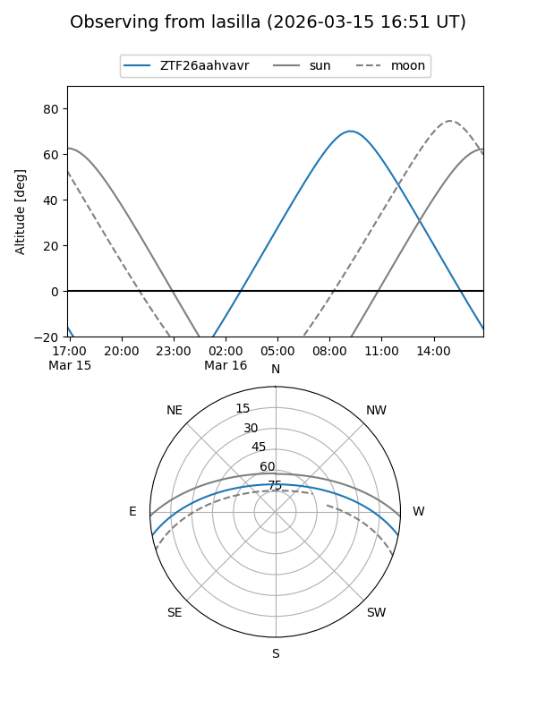
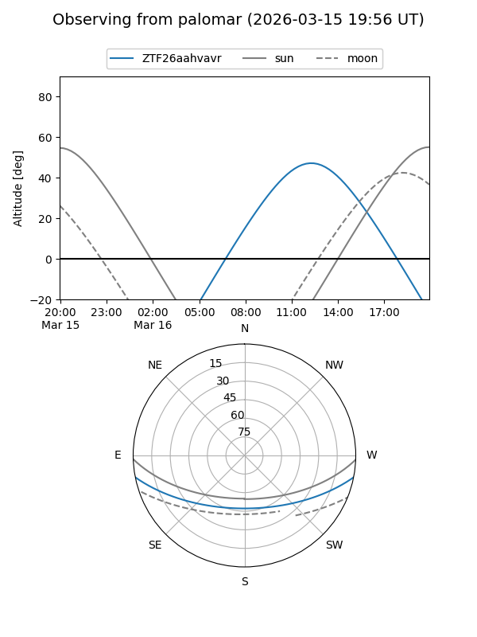

ZTF26aahvavr
Target ZTF26aahvavr at 2026-03-16 11:00
Aliases and brokers:
FINK: link
Lasair: link
ALeRCE: link
alt names
ZTF26aahvavr (ztf,fink_ztf)
Coordinates:
equatorial (ra, dec) = 241.0556,-9.35155
equatorial (HMS+DMS) = 16:04:13.34,-09:21:05.56
galactic (l, b) = (1.7845,+30.74867)
Flags:
Photometry:
last ztfg=18.55
1 ztfg detections
Lightcurve
Visibility


Additional plots